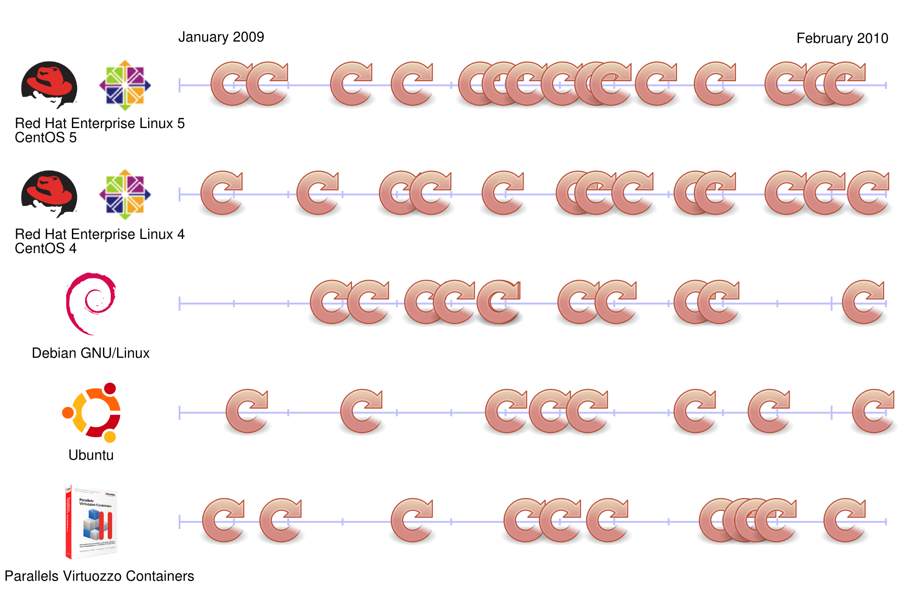
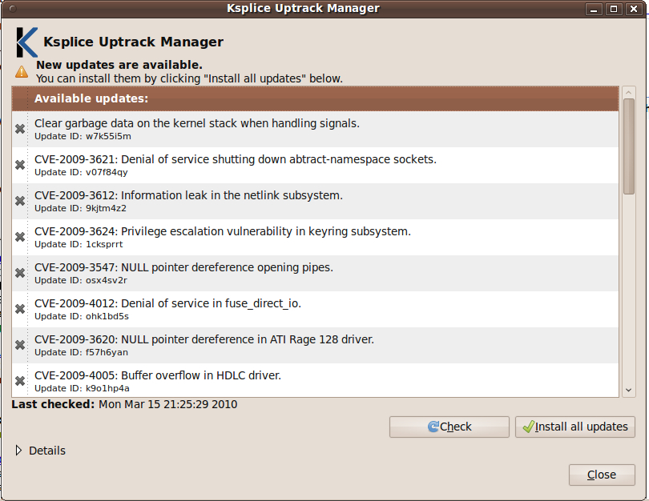
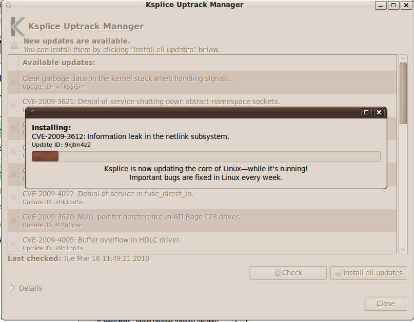

| developerWorks |
| In this article: | |
| Patching a live kernel | |
| Kernel patching was never this easy | |
| Updating custom kernels | |
| Twenty-four, Seven, Three Hundred Sixty-five | |
| Resources | |
| About the author | |
| Rate this page | |
| Related links | |
| AIX and UNIX technical library | |
|
Level: Intermediate Martin Streicher (martin.streicher@gmail.com), Software Developer, Pixel, Byte, and Comma 22 Mar 2010 Ksplice applies kernel patches on-the-fly—no reboot required—in a fraction of a second. Here's a hands-on guide to performing painless system updates. UNIX® machines run and run (and run). A desktop or portable system can be left on for weeks, even months, and server uptime can stretch to a year or more. Indeed, if you could preclude hardware failures and Mother Nature, a UNIX system might run perennially. Alas, hardware is imperfect, Mother Nature has a mind of her own, and software suffers from bugs. Gear requires replacement. Storms happen. And systems require patches and restarts. Much like death and taxes, downtime is a certainty.
However, unlike death and taxes, you can minimize downtime. Proactive and regular system maintenance and hot spares boost availability, as does a robust data center replete with backup power and redundant connections to the Internet. Thankfully, too, most applications and libraries can be updated seamlessly and on demand using tools such as rpm, Aptitude, and yum. Unfortunately, kernel updates—modifications to address vulnerabilities and flaws in the core system software—aren't so painless. A kernel update is very disruptive, requiring scheduled downtime to temporarily halt all services on each and every machine affected and reboot each one. Although such upkeep is necessary and vital, keeping pace with kernel updates can nonetheless make operations something akin to a yo-yo. To wit, the time lines in Figure 1 show the frequency of critical kernel updates for a number of popular operating systems between January 2009 and February 2010. Each cycle icon represents a mandatory restart (image courtesy of Ksplice, Inc.). Figure 1. Frequency of kernel updates by operating system  But now, you can patch your kernel as it runs, eliminating the otherwise wholesale interruption caused by a restart. In other words, scheduled upgrades no longer need a schedule. Ksplice is a set of tools to patch the kernel in situ, as it's running—no reboot required. Given an existing kernel, its source code, and one or more unified diff files (a unified diff is the canonical form for kernel patches), Ksplice replaces existing, errant object code in the kernel with new object code. Ksplice can replace both program code and data structures. Better yet, a kernel splice interrupts normal system operation for a mere fraction of a millisecond, leaving daemons, processes, and connections intact. Let's look briefly at how Ksplice works and learn to use its tools to keep a kernel up to date. There are three ways to use Ksplice: through a GUI; through equivalent, high-level command-line utilities; and, if you have the source to your kernel, through the raw Ksplice tools. A Ubuntu version 9.04 or version 9.10 user, for example, can download and install a point-and-click application to choose and apply kernel modifications. All three variants of Ksplice are introduced here. Put succinctly and simply, Ksplice patches a running kernel by replacing one or more vulnerable or faulty functions with newer, correct implementations. To effect the substitution (again, oversimplifying for the moment,) the tool amends a running kernel image with the new functions' object code and injects a jump at the head of each existing function to call its new counterpart. Virtually the entire kernel remains unchanged, save for the new object code and a few instructions to redirect the function calls. Additionally, Ksplice can affect data structures, albeit with a little extra programming. Ksplice can run code during an update to facilitate such a change. It also provides a pair of hooks to run setup and tear-down code immediately before and immediately after the kernel is updated. You can also add new functions to augment the kernel: New functions simply have no counterparts in the original kernel. You can apply Ksplice to virtually any kernel, even those that shipped before Ksplice was
developed. To splice a kernel, you must have its source code, the set of patches
you want to apply, and a compiler capable of isolating each function and data structure
in the kernel in its own section in the object code. For example, the GNU Compiler
Collection (GCC) provides the flags Ksplice refers to the kernel compiled from the original source as the pre kernel. The new kernel built from the patched source is the post kernel. And the running kernel is nicknamed the run kernel. Ksplice fails if pre is not the same as run—a clear indication that the source code does not match the running kernel. Apart from that special condition, Ksplice compares pre to post, and each difference becomes a splice. All splices are bundled into a single object file ready to be injected into the kernel. Ksplice uses the
Kernel patching was never this easy If you run one of the more popular UNIX distributions, Ksplice couldn't be easier to use. The authors of Ksplice provide a client application customized for your distro. You can keep your kernel up to date for a nominal fee of less than US$5 per system per month. You can find a list of supported operating systems on the Ksplice Web site (see Resources). The Ksplice software is available free of charge for Ubuntu 9.04 (Jaunty Jackalope) and Ubuntu 9.10. For demonstration purposes, this article uses Ubuntu and splices its kernel. To use
Ksplice on Ubuntu, you must download and install the Ksplice Uptrack client (see
Resources for a link). Uptrack manages the rebootless
kernel updates available for your system. You can view and install Ksplice updates,
and you can review alerts when new kernel updates are available. The software is
provided as a Debian package. (You can also download the software from the
command line using a tool such as Next, use
If you prefer a graphical client, you can install Ksplice with the command:
Listing 1. Installing Uptrack and its dependencies
After you accept the terms of service and the installation finishes, Uptrack launches automatically. The installer also places a Ksplice icon—a large letter K in the task bar—for easy access. Figure 2 shows the Uptrack Manager launching for the first time on a clean installation of Ubuntu 9.10. To patch the kernel, click Install all updates. Figure 2. Launching the Uptrack Manager  A progress bar, shown in Figure 3, echoes each patch as it is installed. Patching the kernel takes less than a few seconds, even when a good number of patches are outstanding. And, of course, no reboot is required. Figure 3. The Ksplice progress bar  When finished, the Uptrack Manager refreshes to show you the new state of your system,
as shown in Figure 4. A green check mark indicates that the named
patch was applied successfully and is now live in your running kernel. Click Check
to look for additional kernel patches available for your system. Click Close to
dismiss the window. It is not necessary to run Figure 4. The current system state in Uptrack Manager 
You can open Uptrack any time later with the command
In addition to It is essential to remember that Uptrack does not usurp the role of your distribution's standard package manager. All changes that Ksplice makes are applied to the running kernel and exist in memory only. Therefore, all Ksplice patches are lost upon shutdown. Continue to update your kernel on disk with a traditional software maintenance procedure, such as running:
as root on a regular basis or when your distribution informs you of new system updates. Keeping the kernel on disk up to date ensures that your system boots the best kernel available when your system eventually requires a restart.
Uptrack Manager is a convenient option for desktop and server computers based on kernels built and distributed by a vendor or a community project. It won't work, though, if your kernel is customized and built locally, because Uptrack cannot compare your kernel to a known, published operating system to generate splices. However, you can use Ksplice's "primitive" utilities to analyze public patches and create your own splices. Describing how to build a kernel is beyond the scope of this article. If you're unfamiliar with the process, there are excellent instructions and a good number of satisfactory tutorials scattered across the Internet. Instead, let's focus on the tools Ksplice provides and how to proceed once you are able to build any kernel. Ksplice provides a utility named Here is an example (taken from the authors' academic paper and used with express permission) that creates an update for the "prctl vulnerability," CVE-2006-2451, using a patch file called prctl and a kernel source directory ~/src:
The former command generates a tarball of object code, ksplice-8c4o6u.tar.gz, to be patched into the kernel. The second command reads the tarball, calculates the renovations required, and applies the splice.
Twenty-four, Seven, Three Hundred Sixty-five Ksplice is a proven technology. According to the authors' original paper and technical study, Ksplice was able to dynamically patch the Linux® kernel with all security and functional patches issued between 2006 and 2008. Of those, more than two-thirds required no special code to update the kernel. Of the remaining patches, special programming amounted to an average of 17 lines of code per patch. Linux was chosen to prove the Ksplice approach. The Linux source is widely and frequently vetted for flaws and is patched often to quickly address shortcomings. However, Ksplice can readily be adapted to any kernel for which source code is available, including BSD and Sun Solaris. Ksplice supports x86, x86_64, and ARM processors, too. Learn
Get products and technologies
Discuss
| |||||||||||||||||||||||||||||||||||||||||